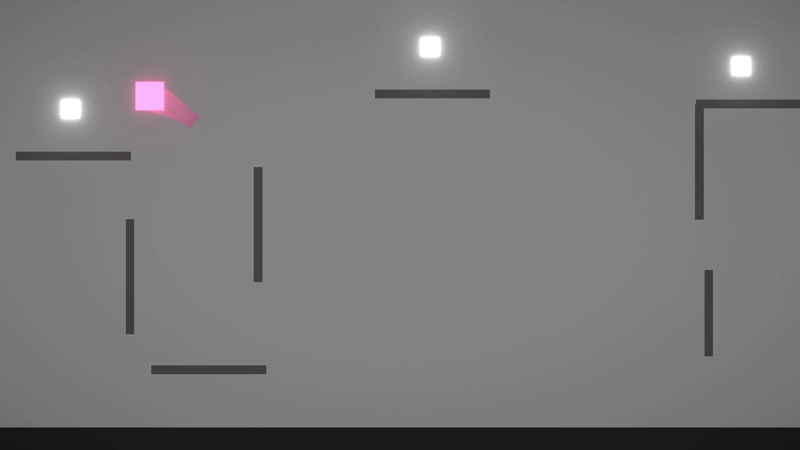
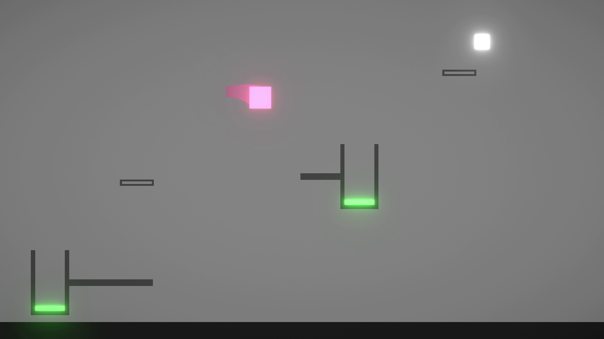
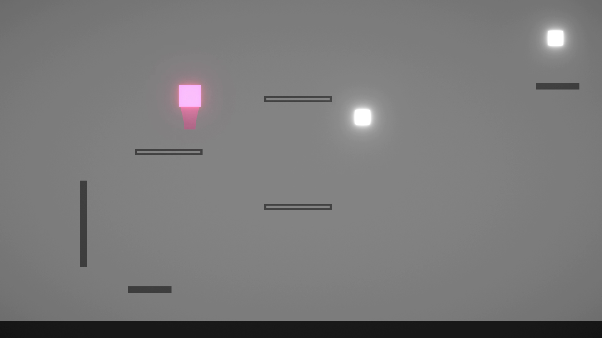

A snappy, satisfying, movement system aims to make the player feel engaged and in total control.

Levels vary between themes. Some require logical thinking while others require precise movement.

Never run out of levels with an in-game level creator and a sharing forum!